Dr.Stone is a story about a high-schooler, Senku, learning how to live again after luck allows him to regerate after a mysterious green light turns everyone into stone. Gathering people along the way, he strives to revive civilization with the use of science and partnership.
 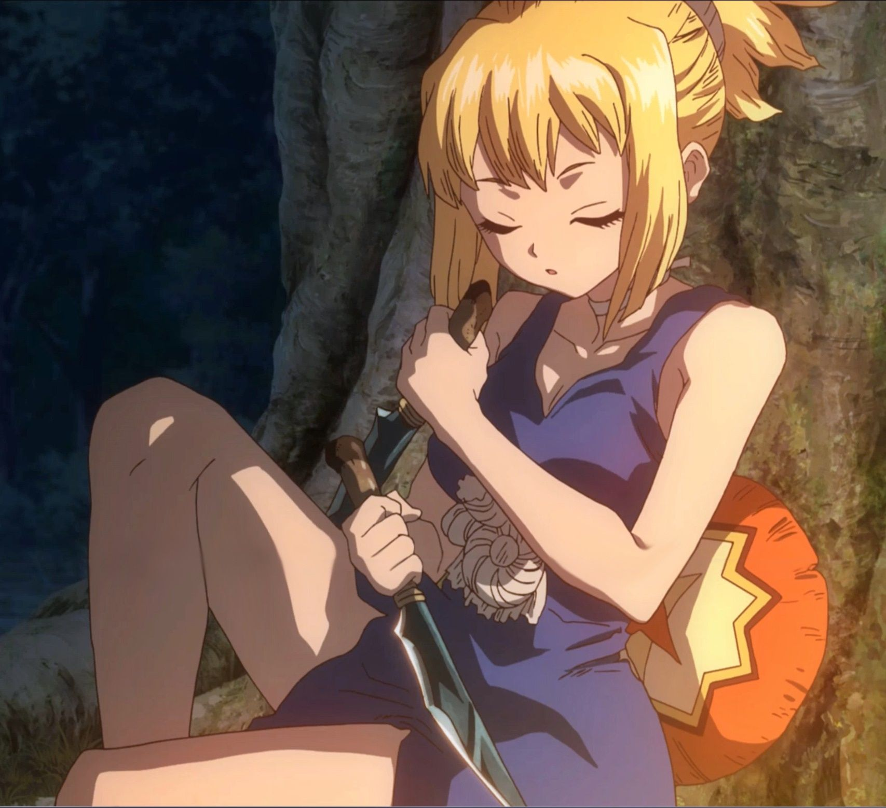
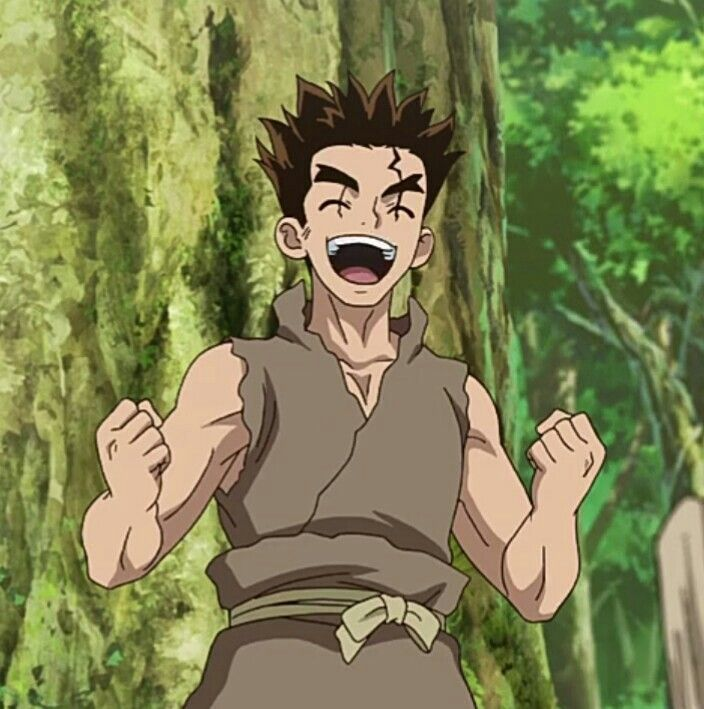
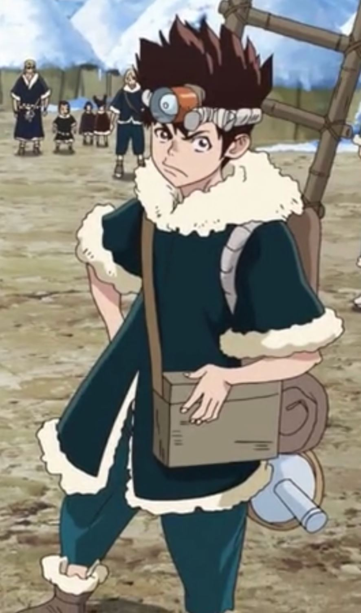
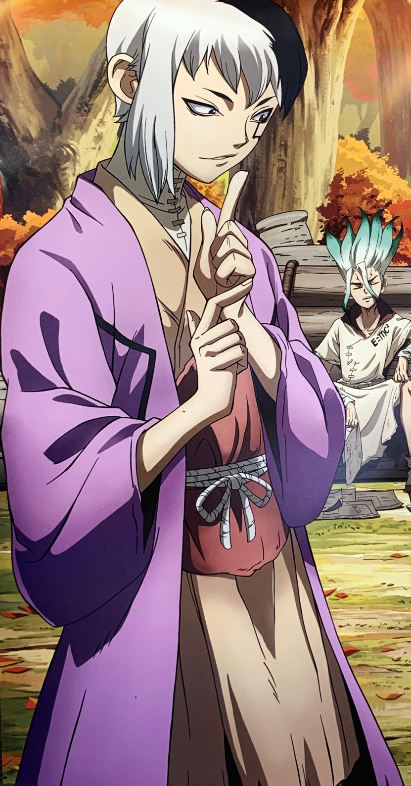
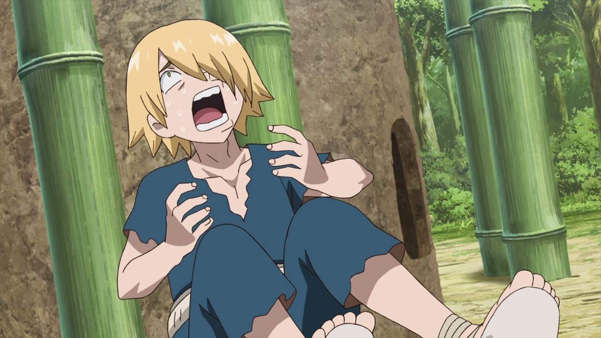
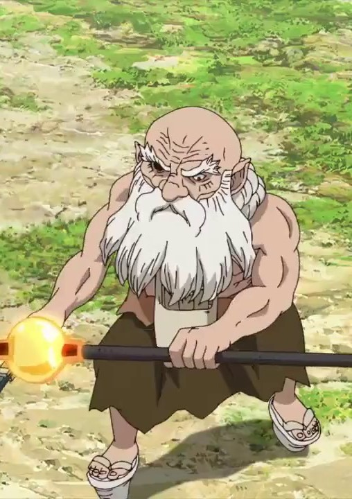
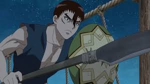
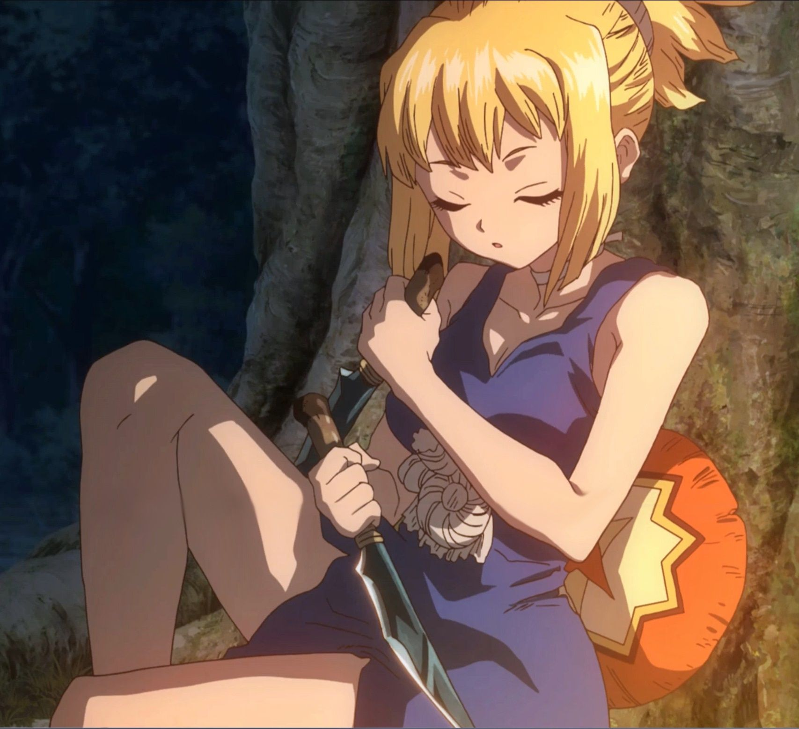
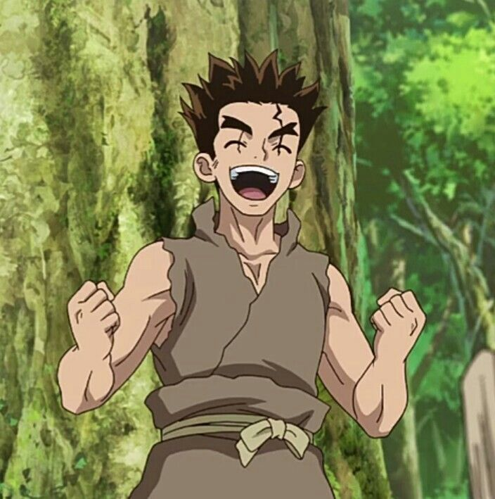
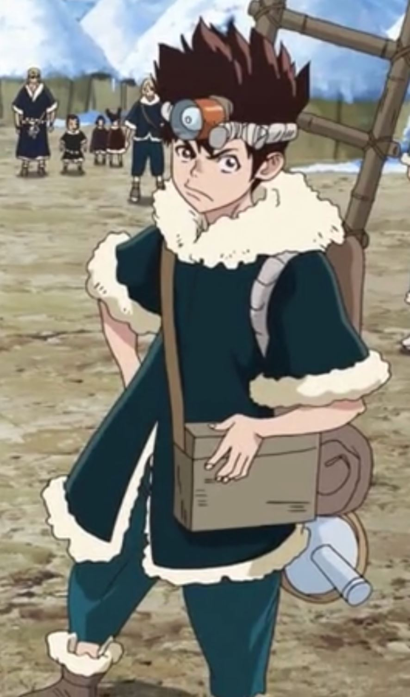
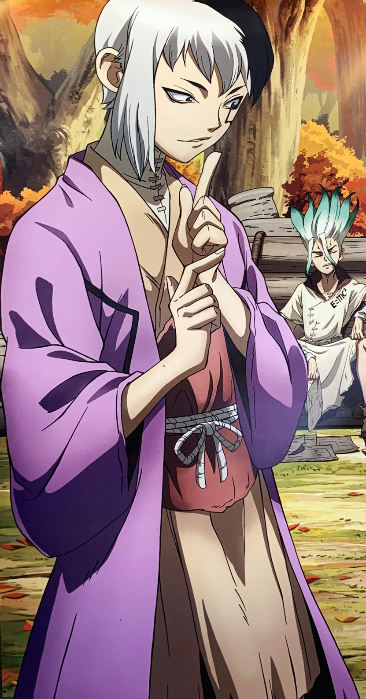
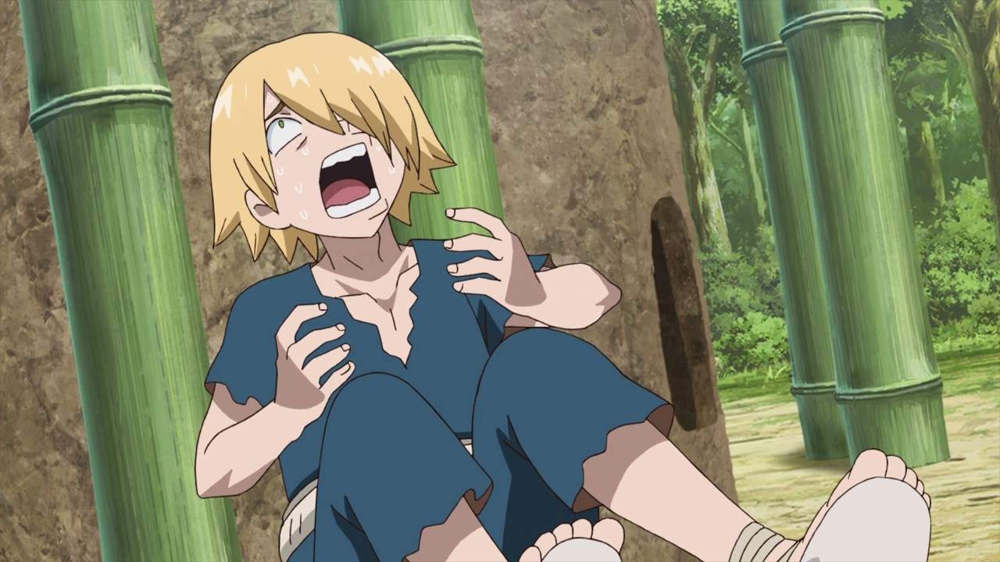
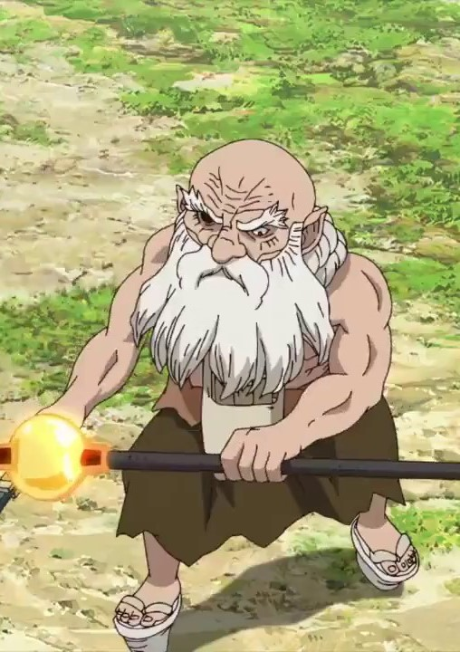
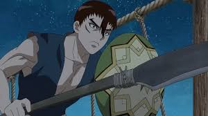


Senku has a very logical mind, believing that there is nothing science cannot explain, even if it takes a long time to properly understand any one concept through science. Senku regularly bends the rules, withholds information, and manipulates others to get what he wants. He often acts as if he builds inventions and uses people for his own interest, while actually creating for the betterment of others. Beneath Senku's outward arrogance and manipulative actions lies a genuinely selfless and kind heart.
Kohaku is a kind young woman, willing to put her sweat and tears, as well as her own life on the line to protect those she holds dear. Kohaku is always attentive to give emotional support to people going through hardship. On her flip side, she tends to be extremely cautious or even threatening with people who haven't earned her trust. She has a choleric and impulsive personality that makes her burst in rage or carry out reckless actions if provoked, which could potentially lead her into fatal mistakes. Despite how violent she can be, Kohaku has admitted that she could not bring herself to kill a person, and if she were to do it, she would have to do it under orders, diminishing her responsibility in the act.
Taiju is an outgoing, friendly, and kind person. He's enthusiastic about performing even small tasks and a diligent worker. He is very determined when something is important to him. He tends to yell loudly and is enthusiastic regardless of the task so long as he proves useful. He is persistent and determined. Despite being emotional and expressive, he has great control of his temper, never losing his cool or acting impulsively. He tends to easily trust others and believe in the good of others. He is a pacifist who refuses to fight others because he does not want to hurt others. He can be resourceful and also has a good memory.
Chrome is also exceedingly brave and a loyal comrade. Chrome is selfless, especially when it comes to his friends. While he is usually a loudmouth, he knows when to keep his mouth shut. As someone with a lot of drive, Chrome is naturally quite combative, and his first instinct seems to be challenging people who may encroach on his self-imposed roles. He is naturally inquisitive and loves helping make inventions. In spite of his naivety when it comes to the outside world, he is shown to be wary of those he distrusts.
Gen is a proficient liar and skilled manipulator, with no hard-and-fast policies regarding his approach to life, making him dangerous as a foe and untrustworthy as an ally. He takes pride in his abilities as both a magician, and as a mentalist with his knowledge of the human psyche. He is a skilled actor, fiercely in control of his body and emotions even when in danger. Gen shows an average understanding of modern innovations and scientific knowledge, acting as the bridge between a scientist and a layman. He tends to act self absorbed and perverted most of the time. Gen is a good person who can't bring himself to harm others. Although his outward appearance is masked by his mastery in psychology, but his actions tell of loyalty, determination, kindness, and genuine admiration of others.